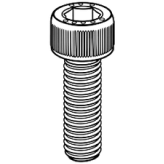

Assembly · Sub-step 1 of 4
Installing the z-limit switch
An external z-limit switch is installed to perform z homing upwards.
You will need

M5 x 10mmx 2
M3 x 6mm
x 2
x 2
Steps
- Remove the bottom casing of the printer
- Plug the z-limit switch into port J713 as shown in Figure 3A.